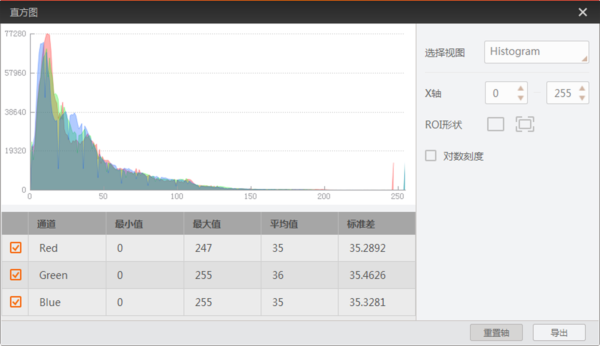

窗口预览工具预览相机图像或本地图像时，可查看图像的直方图信息。
直方图可体现图像的灰度值或R/G/B各通道数值是像素排布情况。黑白图像的直方图显示灰度值信息，彩色图像的直方图显示R/G/B各通道信息。
图像预览窗口通过相机实时图像或打开本地图像时，点击可进入直方图窗口。该窗口可查看图像的直方图相关信息并进行其他操作。彩色图像的直方图如下图所示。
坐标系显示的数据为下方表格勾选的灰度值或R/G/B数值，可根据实际需求勾选需要显示的通道。
当鼠标移动到坐标系时，可显示当前选中列的X/Y轴的数据信息；选中某一列后长按鼠标可移动坐标系；也可通过鼠标的滚轮对坐标系进行放大或缩小。

图 1 彩色图像直方图
- 选择视图
- 择视图类型，分为Histogram、Line Profile和Column Profile三种。
- Histogram
- 显示整副图像的灰度值或R/G/B各通道数值。坐标系的X轴表示灰度值或R/G/B通道数值，Y轴表示像素个数。
- X轴
- 可调整直方图横坐标的范围。
- Line Profile
- 显示图像中鼠标选中行的灰度值或R/G/B各通道数值。坐标系的X轴表示像素的横坐标位置，Y轴表示灰度值或R/G/B通道数值。
- 位置
- 显示图像中鼠标所处点的横纵坐标信息。
- 行
- 可调整直方图横坐标的范围，最大范围为0~图像的横向分辨率。
- Column Profile
- 显示图像中鼠标选中列的灰度值或R/G/B各通道数值。坐标系的X轴表示像素的纵坐标位置，Y轴表示灰度值或R/G/B通道数值。
- 位置
- 显示图像中鼠标所处点的横纵坐标信息。
- 列
- 可调整直方图横坐标的范围，最大范围为0~图像的纵向分辨率。
- ROI形状
- 可通过设置ROI区域，此时仅显示ROI区域的直方图；通过
 可取消ROI绘制。
可取消ROI绘制。
- 对数刻度
- 可根据实际数值分布调整纵坐标的范围。
- 重置轴
- 直方图被放大或缩小后，可通过重置轴快速恢复默认。
- 导出
- 以csv格式文件将直方图信息导出。